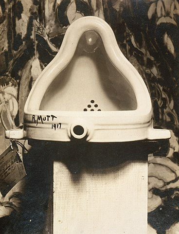
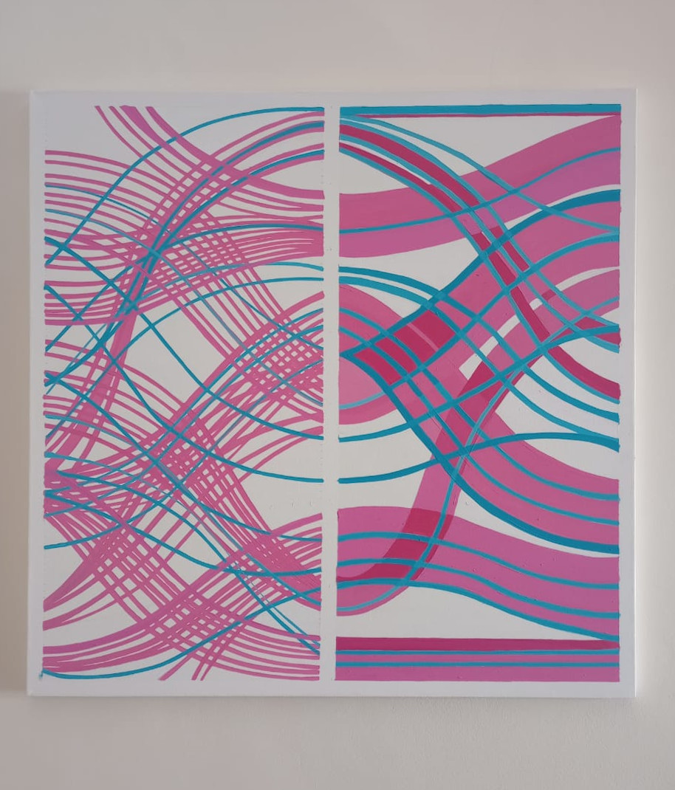

Art with Data
I’m far from being an art expert, but we can say that since Marcel Duchamp’s Fountain sculpture, consisting of a porcelain urinal, the world of art changed forever! The Fountain is a readymade sculpture by Marcel Duchamp in 1917, consisting of a porcelain urinal signed “R. Mutt”. When explaining the purpose of his Readymade sculpture, Duchamp stated they are “everyday objects raised to the dignity of a work of art by the artist’s act of choice. In other words, everything could be art with the right concept.

Figure 1: Fountain is a readymade sculpture by Marcel Duchamp
Generative Art
So, returning to Duchamp, everything can be art, and of course, Code is NO Exception. In the last rstudio::conf(2022) held in Washington DC., one thing that got my attention (among the large set of exciting news) was the workshop on generative art given by Danielle Navarro. Danielle is a generative artist, data scientist, and academic in recovery among other things. According to Danielle’s definition, generative art is computational artwork that incorporates some source of noise, disorder, or randomness (natural or artificial) into the artistic process itself. Danielle’s workshop was based on the R language (of course!). And especially in some aspects of the ggplot2 grammar of graphics.
Yes, we are using R for making aRt, (what else should we expect next in this crazy world? Using R for making games? No way!!! 🤣.). You can search for the hashtag #rtistry on Twitter to see some really beautiful examples.
The idea of using code for making art sound like the perfect symbiosis between those two worlds…
I consider myself a great artist trapped in a talentless man body (not joking 🤨) In fact I always believed that artists and hackers have so many things in common. I always felt comfortable talking and discussing with artists. I love it so much that I actually married one 🖤. The way the artists interact with the world was so similar to mine. And then I found PG’s essay about painters and hackers and everything started to fit! The similarities between both were evident! The most interesting people I have met in the computer science scene also have an artistic facet. Music, painting, writing, filmmaking, game design… you name it! So the idea of using code for making art sound like the perfect symbiosis between those two worlds.

BIAS, a work of art using real data
Generative art uses random data, but what about making art with real data? That will be something Duchamp could not have ever imagined (or maybe yes??). Could data be a work of art? Well, I really don’t know and I’m far from being a specialist on that subject. The fact is that together with visual artist Lili Fiallo, we have started to produce works of art based on data and inspired by graphics generated with the R language. Our first work of art is BIAS.
BIAS is a work of art generated from DATA from the Vendimia Art Salon. A traditional salon for visual artists held in Mendoza City (Argentina) for the last forty years. Data were compiled from catalogs, newspapers, and other sources provided by the Internet The data were extracted, curated, and cleaned using the usual R tools. Then, we used the ggplot2 package (among others) for transforming data into a visual representation. Check the code below!!
library(googlesheets4)
library(ggplot2)
library(ggalluvial)
library(dplyr)
library(lubridate)
salon_vendimia<-googlesheets4::read_sheet("xxxxxx")
salon_vendimia %>%
group_by(Ano,Disciplina,Premio,Genero) %>%
summarise(Freq=n()) %>%
arrange(desc(Freq)) %>%
ggplot(aes(y = Freq, axis1 = as.factor(Ano),
axis2 = Premio,
axis3=Disciplina),
alpha=0.2) +
geom_alluvium(aes(fill = Genero), width = 1/12) +
geom_stratum(width = 1/8, fill = "white", color = "gray") +
scale_fill_brewer(type = "qual", palette = "Set1") +
theme_void() +
theme(legend.position = "none")
We have applied some of the tips provided by Danielle Guerrero in her workshop about generative art using ggplot2. Still, instead of putting some artificial randomness, the source disorder comes from Lili Fiallo’s own reinterpretation of the plot on a 90cm x 90cm canvas.
BIAS refers to the ever-present bias toward women in the art world.
Figure 2: BIAS. Acrylic on canvas. 90cm x 90cm. Adapted from an alluvial plot generated using ggplot2.
The concept behind BIAS refers to the ever-present bias toward women in the art world. This kind of bias is also present in the Vendimia Art Salon. In BIAS we aim to expose the little influence women have had from 1970 to the present in the Salon which is demonstrated convincingly from the data.
Here, the data is a work of art. A work communicated through a 90cm x 90cm canvas where the colors are altered from the conservative preconception, where the light blue represents the feminine presence and the traditional pink the masculine one.
Most generative art is focused on producing beautiful patterns using random data. But In many cases, there is no concept behind the resulting plots. Here instead, we have a concept. BIAS has a clear concept provided by the data and is represented visually on the canvas.
So as you can see, thanks to Duchamp, we can find art everywhere and Data is no exception!
More info about generative art
[1] aRtsy: Generative Art with R and ggplot2. A library to make generative art accessible to the general public
[2] Danielle Navarro’s workshop about generative art
[3] generativepy, a python library for making generative art.